Appendix B: read after the complete core textbook route. This extension is already prepared; it does not replace Chapters 1–16 or the five source-project stages.
附录 B：完整主教材路线之后阅读。该扩展已经备妥，不替代第 1—16 章或项目来源五阶段。
The result is conditional: No finite universal pressure or jet-speed maximum follows from “laser-induced cavitation” alone. Fix energy, composition, geometry, collapse asymmetry, observation position, and time resolution first. The hierarchy below solves an ideal benchmark, verified interacting-bubble examples and a finite uniform-cloud acoustic model; it then states the closures required for a predictive PFC pressure field.
结果依赖条件：仅凭“激光诱导空化”无法得到有限的普适压力或射流速度上限。须先确定能量、成分、几何、塌缩非对称性、观测位置和时间分辨率。下面的模型层级求解理想基准、经核验的相互作用气泡算例及有限均匀气泡云声学模型，再给出预测 PFC 压力场所需的闭合关系。
1 · Specify which pressure and which velocity
1 · 指定是哪一种压力与速度
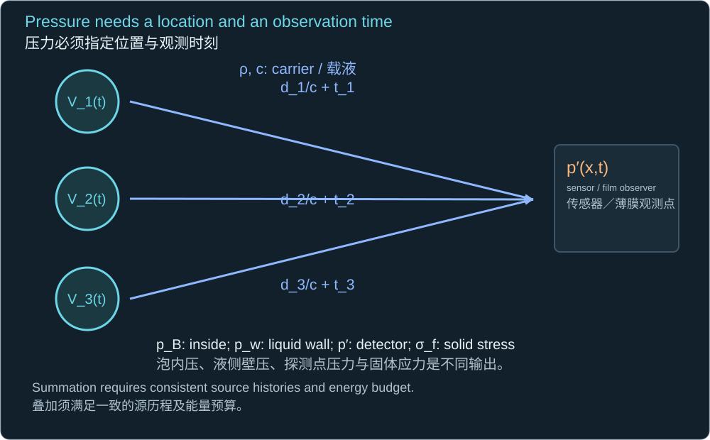
A source pressure, detector pressure, fluid surface traction and solid interface stress are different observables.
源压力、探测点压力、液体表面牵引力及固体界面应力属于不同观测量。
| Observable / 观测量 | How it is defined / 定义方式 |
|---|---|
| pB at minimum radius 最小半径时的泡内压 | Thermodynamic bubble content; model/EOS dependent 泡内物质热力学状态；依赖模型及状态方程 |
| p′(x,t) in liquid 液体中的 p′(x,t) | Location, propagation, reflections and bandwidth specified 须指定位置、传播、反射及带宽 |
| pF and σ at the film/interface 薄膜／界面的 pF 与 σ | Fluid–solid transmission and transient structural response 流固传递及瞬态结构响应 |
| |Ṙ|, Uj and shock-front speed |Ṙ|、Uj 与冲击波前速度 | Wall motion, liquid jet tip, and wave propagation are separate 泡壁运动、液体射流尖端及波传播相互区分 |
An isolated spherical bubble has no preferred axis and hence no directed microjet. It can generate radial flow and a strong shock. To discuss jet speed, introduce a boundary, a neighbour, a pressure gradient or a shaped interface and solve that asymmetry. “Supersonic” must specify the sound speed of the gas, the carrier, or the shocked material.
孤立球形气泡没有优选轴，因此不会产生有方向的微射流，但可产生径向流动和强冲击波。讨论射流速度时，需要引入边界、邻泡、压力梯度或特定界面形状，并求解这种非对称性。“超声速”还必须说明参照的是气体、载液，还是受冲击材料的声速。
2 · Verified high-end examples, with the measurement type attached
2 · 经核查的高值实例，同时注明测量类型
| Study and configuration / 研究与结构 | Verified result / 经核查结果 | Interpretation / 解释 |
|---|---|---|
| Reuter & Ohl 2021: one laser bubble very near a rigid wall 刚壁附近的单个激光气泡 | Measured lower bound on average needle-jet speed: >850 m/s 针状射流平均速度实测下界：>850 m/s | Across a gas cavity; “supersonic” does not imply faster than ambient water sound. 穿过气体空腔；“超声速”不意味着高于常温水声速。 |
| Brujan et al. 2001: laser bubble near E = 0.25 MPa gel E = 0.25 MPa 凝胶附近的激光气泡 | Maximum measured liquid jet velocity: 960 m/s 实测液体射流最高速度：960 m/s | Elastic recoil can strengthen or redirect jets. 弹性回弹可能增强射流或改变方向。 |
| Fan et al. 2024: timed laser-generated bubble pair, roughly 0.5 mm radius 约 0.5 mm 半径、受控时序的激光气泡对 | About 1400 m/s average from imaging; about 3000 m/s brief peak in simulation 成像所得平均约 1400 m/s；模拟瞬时峰值约 3000 m/s | Peak, average and post-piercing velocity differ; the pair timing is essential. 峰值、平均值及穿透后的速度不同；气泡对时序至关重要。 |
| Liang et al. 2022: highly spherical water bubble, Rmax ≈35.8 µm 高度球对称水气泡，Rmax ≈35.8 µm | Model collapse pressure 13.5 GPa; FWHM 76.5 ps; wall speed −1788 m/s 模型塌缩压力 13.5 GPa；半高全宽 76.5 ps；泡壁速度 −1788 m/s | Extended Gilmore reconstruction conditioned on optical/radius/oscillation data; not a jet or film pressure. 依赖光学、半径及振荡数据的扩展 Gilmore 重建；并非射流速度或薄膜压力。 |
| Vassholz et al. 2021: nascent water bubble after optical breakdown 光学击穿后的初生水气泡 | Early shock peaks >20 GPa inferred from X-ray density profiles using a Tait EOS 采用 Tait 状态方程，由 X 射线密度剖面反演早期冲击峰值 >20 GPa | Density is the measured field; pressure depends on the EOS and shape reconstruction. This is not a direct film-pressure measurement. 实测场为密度；压力依赖状态方程及形状重建，并非薄膜压力的直接测量。 |
Reuter & Ohl (2021), APL, DOI 10.1063/5.0045705 — PDF pp. 2–3; the >850 m/s value is a lower bound.
Brujan et al. (2001), JFM, DOI 10.1017/S0022112000003347 — PDF p. 1 abstract.
Fan et al., author manuscript; PRL 132, 104004 (2024), DOI 10.1103/PhysRevLett.132.104004 — author manuscript PDF pp. 4–7, especially p. 5; final publication verified by DOI.
Liang et al. (2022), JFM, DOI 10.1017/jfm.2022.202 — PDF pp. 30–34, Figures 7–8.
The last entry follows the primary Nature Communications article, specifically its Results, Figure 3 and Discussion. The indexed full article text was available; its PDF could not be acquired. The experiment used 1064 nm, 6 ns, 24 mJ pumping, far above the inherited sub-µJ pulse. These checked examples do not establish a worldwide record or a PFH limit. A 2026 electrically generated tandem-bubble study was excluded from this laser-specific table.
最后一项依据 Nature Communications 原始论文的结果、图 3 及讨论。可获取已索引的完整论文文本，但未能下载 PDF。实验采用 1064 nm、6 ns、24 mJ 激发，远高于沿用的亚微焦脉冲。这些经核查实例不能确定世界纪录或 PFH 极限。2026 年一篇电驱动串联气泡研究未列入这个激光专属表。
3 · Solve the simplest bubble and locate its false infinity
3 · 求解最简单的气泡，并定位其非物理无穷大
ρ(RR̈ + 3Ṙ²/2) = −Δp
Δp = p∞ − pv
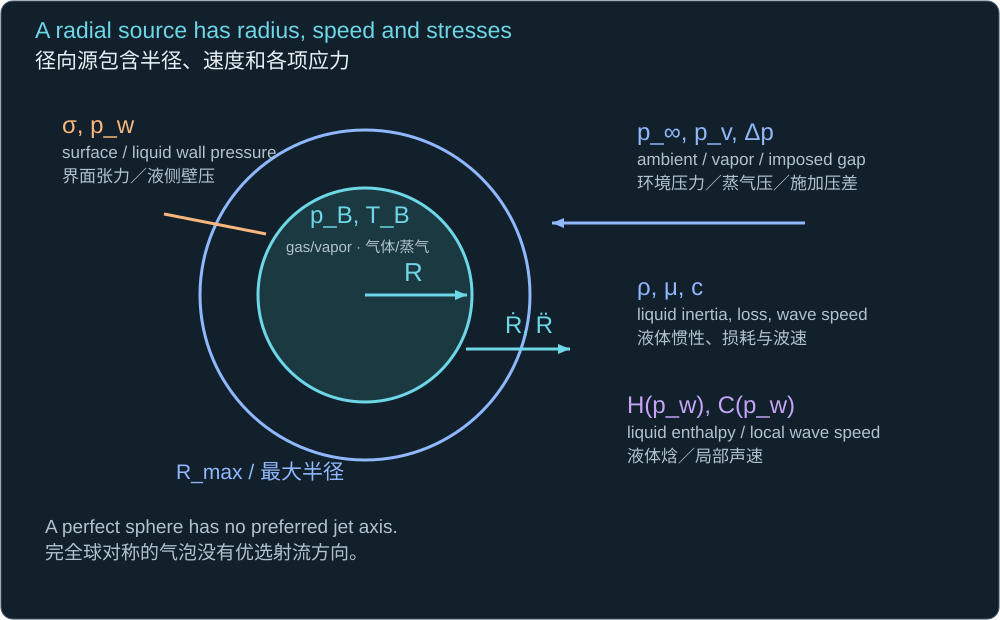
An empty spherical cavity starts from rest at Rmax; gas, viscosity, surface tension and compressibility are omitted.
空的球形空腔从 Rmax 处静止开始；忽略气体、黏性、界面张力及可压缩性。
Ṙ = −√{[2Δp/(3ρ)][(Rmax/R)³ − 1]}
tR = 0.914681Rmax√(ρ/Δp)
The negative root describes collapse. The coefficient comes from the full dimensionless radial integral, not an empirical velocity cap.
负根表示塌缩。系数来自完整的无量纲径向积分，而不是经验速度上限。
For the inherited 8 µm example, ideal collapse takes 0.73482 µs. At half radius the wall speed is 21.51 m/s; at one tenth it is 256.99 m/s. The formula diverges at zero radius because no compressible or internal-pressure mechanism arrests it. The divergence is a model-failure signal, not a physically achievable infinite jet speed or load.
对于沿用的 8 µm 例子，理想塌缩时间为 0.73482 µs。在半径减半时，泡壁速度为 21.51 m/s；减至十分之一时，为 256.99 m/s。由于模型中没有可压缩性或内部压力机制终止塌缩，零半径处速度发散。这个发散是模型失效信号，并非可实现的无限射流速度或载荷。
Mw = |Ṙ|/c
R/Rmax = {1 + 3ρ(Mwc)²/(2Δp)}−1/3
The declared Mach cutoff converts the ideal mathematical trajectory into a finite domain-of-validity screen.
所声明的马赫数截止值，将理想数学历程限定为有限的适用性筛查区间。
At a declared wall-Mach cutoff of 0.1, the ideal radius fraction is 0.14424. This is an escalation convention, not a universal physical discontinuity. An incompressible model should not be extended to obtain collapse-shock peaks.
若声明泡壁马赫数截止值为 0.1，则理想半径比例为 0.14424。这是模型升级约定，不是普适的物理突变点。不能将不可压缩模型继续延伸，用于获取塌缩冲击波峰值。
4 · Add gas, acoustics and the liquid equation of state
4 · 加入气体、声学及液体状态方程
pw = pB − 2σ/R − 4μṘ/R
(1 − Ṙ/c)RR̈ + (3/2)(1 − Ṙ/(3c))Ṙ²
= (1 + Ṙ/c)(pw − p∞)/ρ + [R/(ρc)](dpw/dt)
This Keller–Miksis form assumes constant ambient pressure and first-order liquid compressibility. The pressure derivative includes viscous acceleration terms.
此 Keller–Miksis 形式假设环境压力恒定，并采用液体可压缩性的一阶近似；压力导数包含黏性加速度项。
A compressible equation still needs a bubble-content law. To verify sensitivity, the supplied executable uses a deliberately pedagogical, fixed-mass gas with κ = 1.4 plus constant water vapor, not a PFH closure. It stops at the first rebound or at wall Mach 0.1. The 1 kPa-at-maximum-radius case reaches the Mach cutoff before rebound; its stopped pressure is not a predicted peak. The other cases remain in the declared low-Mach screen.
可压缩方程仍需要泡内物质规律。为核验敏感性，所附程序明确采用教学性的固定质量气体、κ = 1.4 和恒定水蒸气，而非 PFH 闭合关系。计算在首次回弹或泡壁马赫数达到 0.1 时停止。最大半径处气压为 1 kPa 的算例在回弹前达到马赫数截止值，因此停止时的压力并非预测峰值。其他算例位于声明的低马赫数筛查区间内。
| Assumed gas at Rmax / 假定最大半径气压 | Stopping event / 停止事件 | Minimum R / 最小 R | Max inward wall speed / 最大向内壁速 |
|---|---|---|---|
| 1 kPa | Mach 0.1 cutoff / 马赫数 0.1 截止 | 1.020 µm | 148.20 m/s |
| 10 kPa | First rebound / 首次回弹 | 1.976 µm | 26.67 m/s |
| 50 kPa | First rebound / 首次回弹 | 5.185 µm | 5.02 m/s |
H = ∫p∞pw dp/ρ(p)
(1 − Ṙ/C)RR̈ + (3/2)(1 − Ṙ/(3C))Ṙ²
= (1 + Ṙ/C)H + (1 − Ṙ/C)(R/C)(dH/dt)
Gilmore replaces constant-density pressure work with liquid enthalpy and a pressure-dependent local sound speed C.
Gilmore 模型以液体焓和随压力变化的局部声速 C，替代定密度压力功。
At strong collapse, use an experimentally appropriate liquid EOS, a nonideal bubble-content EOS, heat/mass transfer and a shock propagation calculation. A Tait liquid law is useful within its fitted range but is not guaranteed at tens of GPa. Gas concentration, condensation and the hard-core/nonideal state can change the pressure drastically; increasing a gas pressure does not necessarily increase collapse intensity.
强塌缩时需要实验适用的液体状态方程、非理想泡内状态方程、热质传递及冲击波传播计算。Tait 液体规律在拟合范围内有用，但不保证适用于数十 GPa。气体浓度、凝结以及硬核／非理想状态可能大幅改变压力；提高气压并不一定增强塌缩。
Liang et al. (2022), JFM, DOI 10.1017/jfm.2022.202 — Sections 3–4; extended model and limitations; gas/condensation dependence.
5 · Replace an unspecified gas with actual PFC inventory
5 · 用真实 PFC 存量替代未指定气体
md = ρPFC(4πa³/3)
Ephase,d = md[cp,PFC(Tb − T0) + Lv]
Vv,d = (md/M)RuTb/p
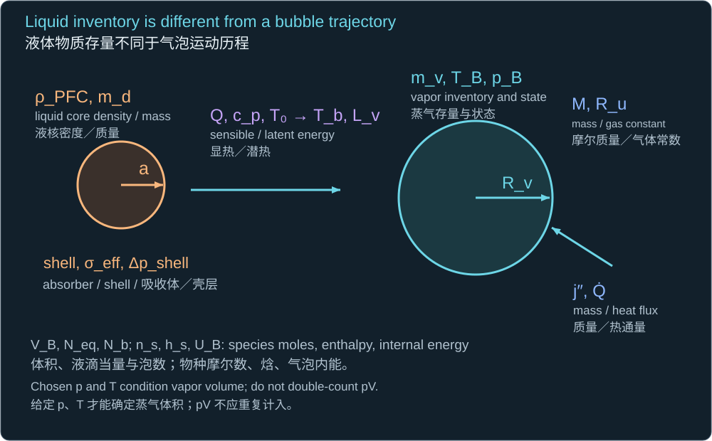
A droplet radius and mass supply a conditional vapor inventory, evaluated at a declared temperature and pressure.
液滴半径和质量提供有条件的蒸气存量；须在声明的温度与压力下计算。
The inherited illustrative core is PFH, not an identified project core: a = 250 nm, density 1670 kg/m³, molar mass 0.3380418 kg/mol, Tb = 332.2 K, cp = 710 J/(kg·K), and Lv = 93200 J/kg. The molar mass and phase data trace to the NIST Chemistry WebBook; the chosen heat capacity/density and temperature extrapolations remain estimates as in the original project contract.
沿用的示例液核为 PFH，但本项目真实液核尚未确定：a = 250 nm，密度 1670 kg/m³，摩尔质量 0.3380418 kg/mol，Tb = 332.2 K，cp = 710 J/(kg·K)，Lv = 93200 J/kg。摩尔质量及相变数据可追溯至 NIST Chemistry WebBook；所选热容、密度及温度外推仍与原始项目参数一样属于估计。
One such droplet contains 1.093 × 10⁻¹⁶ kg and requires about 13.217 pJ of sensible-plus-latent energy from 293.15 K. Its ideal vapor radius at 1 atm and the declared temperature is 1.2814 µm. An 8 µm effective vapor volume therefore requires about 243.325 continuous droplet equivalents and 3.2161 nJ. The project’s effective 8 µm bubble is not the vapor volume of one 250 nm droplet. Coalescence into a single bubble is an additional dynamical assumption.
这样一颗液滴含有 1.093 × 10⁻¹⁶ kg 物质，从 293.15 K 起所需显热及潜热约为 13.217 pJ。在 1 atm 和所给温度下，其理想蒸气半径为 1.2814 µm。因此，8 µm 的有效蒸气体积需要约 243.325 个连续液滴当量及 3.2161 nJ。项目中的有效 8 µm 气泡，并不是单个 250 nm 液滴的蒸气体积。是否汇合为一个气泡还是额外的动力学假设。
pliquid core = p∞ + 2σeff/a + Δpshell
pBVB = RuTBΣ ns
Pre-activation shell/Laplace pressure and post-activation gas-mixture state are distinct. The ideal-gas law is only a low-density closure.
激活前的壳层／Laplace 压力与激活后的气体混合状态不同；理想气体规律只适用于低密度闭合。
Using the water-like 0.0728 N/m merely as a teaching value gives a 582.4 kPa Laplace term at 250 nm. The actual droplet shell and interfaces must supply σeff and the shell stress. The 1 atm vapor-volume calculation omits the bubble’s own curvature pressure, gel work and mass transfer; it is not an equilibrium radius prediction. Vaporization enthalpy already includes constant-pressure expansion work, so adding that same pV work again double counts it.
仅将水样的 0.0728 N/m 用作教学值时，250 nm 处的 Laplace 项为 582.4 kPa。真实液滴壳层及界面须提供 σeff 和壳层应力。1 atm 蒸气体积计算忽略了气泡自身曲率压力、凝胶功及质传递，因此不是平衡半径预测。汽化焓已包含定压膨胀功，再加入同一项 pV 会重复计算。
dmPFC,v/dt = 4πR²j″PFC
dUB/dt = −pB(dVB/dt) + Q̇ + Σ hs(dms/dt)
Interface flux and species enthalpy determine phase inventory and internal energy. Here UB is total bubble internal energy, not jet speed.
界面通量与物种焓决定相态存量及内能；此处 UB 为气泡总内能，并非射流速度。
A real PFC forward model needs the identified core/shell/absorber, the stochastic activation time, vapor and noncondensable masses, temperature, interfacial heat/mass rates and a suitable EOS. Setting the entire PFC vapor pressure constant throughout violent collapse, or treating all PFC vapor as permanent gas, supplies two different extreme closures. Neither is automatically correct.
真实 PFC 前向模型需要确定液核、壳层、吸收体、随机激活时刻、蒸气及不凝气体质量、温度、界面热质传递速率与适当状态方程。在猛烈塌缩中令所有 PFC 蒸气压恒定，或把所有 PFC 蒸气当作永久气体，是两种不同的极端闭合关系，不能自动认定其中任何一种正确。
6 · Finite energy gives conditional bounds, not a universal maximum
6 · 有限能量给出有条件的界限，而非普适最大值
Δp(4πRmax³/3) ≤ ηbEabs
Uj ≤ √(2Ej/mj)
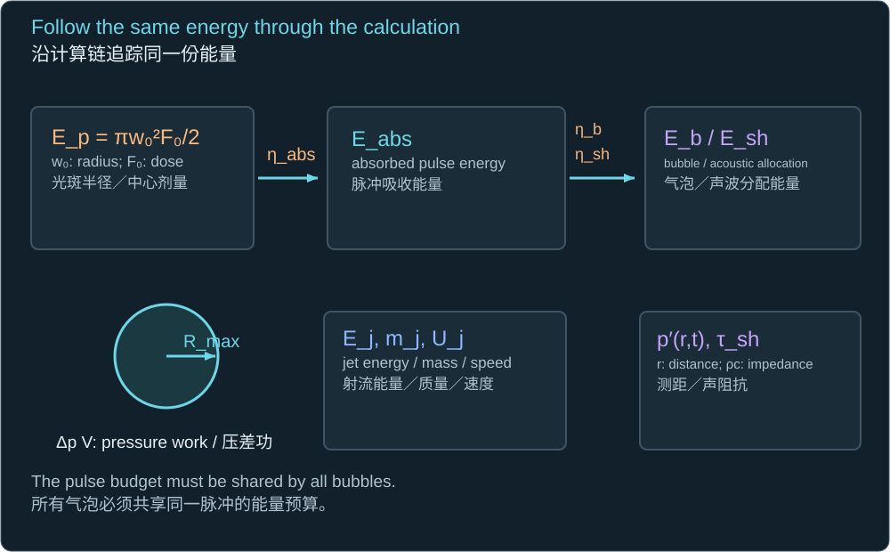
The first is a PV-work-only radius ceiling; the second requires a defined accelerated jet mass and mechanical energy allocation.
第一式是只考虑压差功的半径上界；第二式要求指定被加速射流质量及机械能分配。
Esh ≈ [4πr²/(ρc)]∫p′(r,t)² dt
prect = √[Eshρc/(4πr²τsh)]
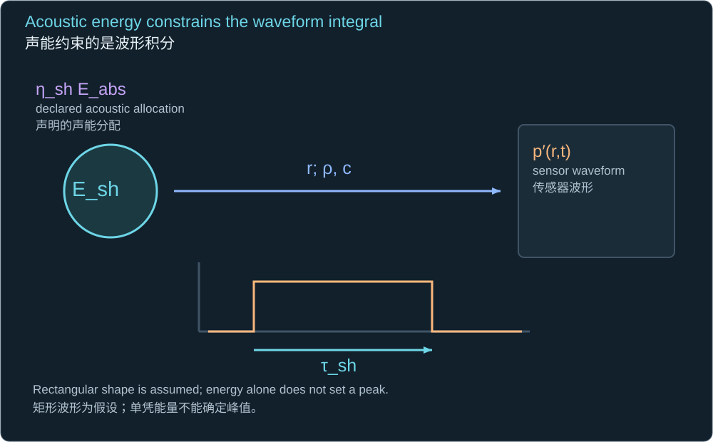
For a weak, outgoing, approximately spherical acoustic pulse, energy constrains the squared pressure integral. The second line assumes a rectangular pressure pulse.
对于弱的、向外传播且近似球形的声脉冲，能量限制的是压力平方积分；第二行假设矩形压力脉冲。
Without a specified pulse width or shape, an energy integral bounds neither a unique peak nor an arbitrarily narrow spike. For illustration only, allocate 1% of the inherited absorbed energy to a 50 ns rectangular acoustic pulse at 1 mm: the pressure scale is 83.27 kPa. This is not the pressure of the actual PFC event or a general peak bound. Near a nonlinear shock, use its EOS and energy flux instead of the weak acoustic formula.
没有指定脉冲宽度或形状时，能量积分既不能确定唯一峰值，也不能限制任意窄的尖峰。仅作示例，将沿用吸收能量的 1% 分配给在 1 mm 处、宽度为 50 ns 的矩形声脉冲，压力尺度为 83.27 kPa。这并非真实 PFC 事件的压力，也不是一般峰值上界。非线性冲击波附近应采用相应状态方程和能流，而非弱声学公式。
qj = ρUj²/2
pwh ≈ ρcUj
pcontact ≈ [ZlZs/(Zl + Zs)]Urelative
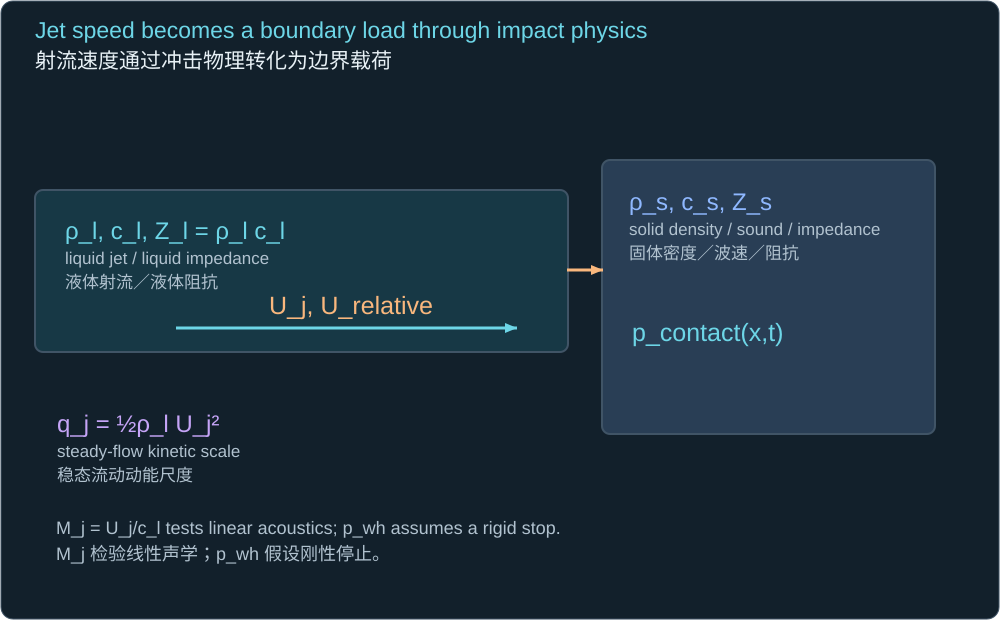
Steady dynamic pressure, rigid-stop water hammer and two-medium contact pressure use different assumptions. Z is acoustic impedance.
稳态动压、刚性停止水锤及两种介质接触压力采用不同假设；Z 为声阻抗。
At Uj = 1400 m/s in the inherited carrier, the arithmetic gives qj = 978.24 MPa and linear rigid-stop water hammer 2071.07 MPa. But the ambient-water Mach number is 0.945, so the linear water-hammer estimate has no reliable quantitative status here. A measured jet velocity is not a measured target pressure; compressible impact, target impedance, footprint and pulse duration decide the load.
若在沿用载液中取 Uj = 1400 m/s，算术上得 qj = 978.24 MPa，线性刚性停止水锤为 2071.07 MPa。但相对常温水的马赫数为 0.945，所以此处线性水锤估算不具备可靠的定量地位。实测射流速度不等于实测目标压力；可压缩冲击、目标阻抗、作用区域及脉冲宽度共同决定载荷。
7 · Three to five bubbles: solve the coupling, then check its limits
7 · 三至五个气泡：求解耦合，再检查边界
RiR̈i + 3Ṙi²/2
+ Σj≠i[Rj²R̈j + 2RjṘj²]/dij
= [pB,i − p∞ − 2σ/Ri − 4μṘi/Ri]/ρ
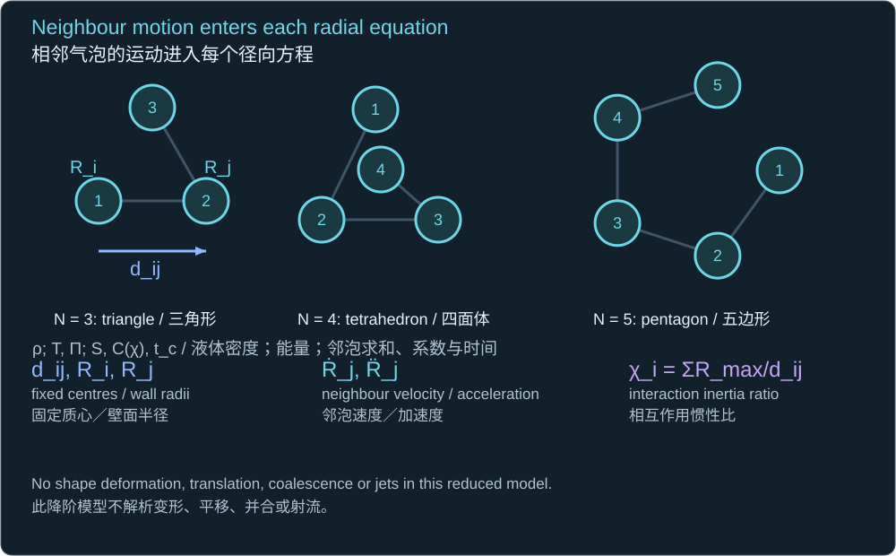
Each neighbour’s monopole pressure changes the drive at bubble i. Distances are between fixed centres and must substantially exceed radii.
每个邻泡的单极压力改变气泡 i 处的驱动；距离为固定质心之间的距离，须显著大于气泡半径。
This leading interaction model follows from the liquid potential of separated spherical sources. For instantaneous coupling it assumes travel times are short relative to source variation. It excludes translation, shape modes and contact. For identical synchronized empty cavities in a geometry with equal neighbour sums, the conserved liquid kinetic energy includes cross terms. The corresponding integrated speed is below the isolated value.
该主导相互作用模型来自分离球形源的液体势。瞬时耦合要求传播时间短于源变化时间，并排除平移、形状模态及接触。若同步的相同空腔处于邻泡求和相等的几何中，守恒的液体动能包含交叉项，相应积分速度低于孤立气泡值。
S = Σj≠i1/dij
Ṙ² = [2Δp/(3ρ)](Rmax³ − R³)/[R³(1 + SR)]
C(χ) = √(3/2)∫01x3/2√[(1 + χx)/(1 − x³)] dx
χ = SRmax
The symmetric configurations share one S. Formal collapse time is C(χ)Rmax√(ρ/Δp); numerical dynamics are stopped before the singularity.
对称结构具有相同的 S。形式塌缩时间为 C(χ)Rmax√(ρ/Δp)；数值动力学在奇点之前停止。
| Geometry at 40 µm nearest distance / 最近距离 40 µm 的几何 | χ | Formal coefficient / 形式系数 | Formal t to zero / 形式零半径时间 |
|---|---|---|---|
| single | 0.0000 | 0.914681 | 0.73482 µs |
| three triangle | 0.4000 | 1.052451 | 0.84550 µs |
| four tetrahedron | 0.6000 | 1.114716 | 0.89552 µs |
| five pentagon | 0.6472 | 1.128896 | 0.90691 µs |
These are verified ideal-cavity calculations with equal 8 µm maxima, not three to five individually vaporized nanodroplets. They show that even a synchronous symmetric cluster changes the collapse coefficient. Asymmetric or delayed pairs can instead focus a fast jet, as the Fan experiment demonstrates. The instantaneous-coupling approximation worsens near the fast endpoint; its physical error is not bounded by the numerical convergence test.
这些是最大半径均为 8 µm、经核验的理想空腔计算，并非三至五个分别汽化的纳米液滴。它们说明即使同步且对称，气泡群也会改变塌缩系数。非对称或延迟产生的气泡对则可能聚焦出高速射流，Fan 的实验展示了这一点。瞬时耦合近似在高速末期变差；数值收敛检验不能限定其物理误差。
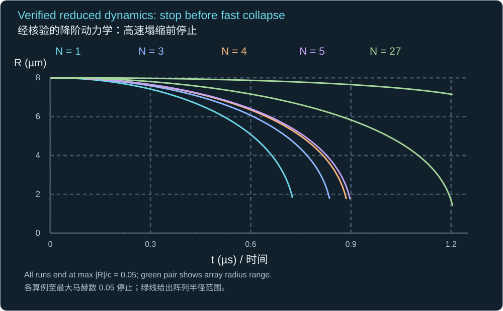
The solver stops all runs when any wall reaches Mach 0.05. In the initially uniform 27-bubble cube, centre and edge radii separate.
任一泡壁达到马赫数 0.05 时停止计算；初始均匀的 27 泡立方阵列中，中心与边缘半径随后分离。
8 · Pressure from several bubbles needs travel delays and a shared budget
8 · 多泡压力需要传播延迟与共同能量预算
Vi = 4πRi³/3
V̈i = 4π(2RiṘi² + Ri²R̈i)
p′(x,t) ≈ [ρ/(4π)]Σ V̈i(t − ti − di/c)/di
This is retarded, weak, compact-monopole radiation in an unbounded carrier; it is not a near-wall collapse-shock law.
这是无限载液中的延迟、弱、紧致单极辐射关系，并非近壁塌缩冲击波规律。
Equal pulses arriving in phase at a point can add coherently; arrival-time spread or phase differences can reduce the peak. Prescribing the same isolated bubble history for every nearby source can violate energy conservation because neighbours also change source work and radiation. At fixed total laser energy, increasing the count is not permission to multiply a single-bubble pressure by that count.
相同脉冲同相到达某一点时可以相干叠加；到达时间离散或相位差异会降低峰值。给每个邻近气泡规定相同的孤立泡历程可能违反能量守恒，因为邻泡也改变源功及辐射。总激光能量固定时，增加数量并不意味着可以用数量直接乘单泡压力。
| Conditional computed geometry / 有条件的计算几何 | Pre-cutoff observer maximum / 截止前观测点最大值 |
|---|---|
| single | 4.824 kPa |
| three triangle | 12.921 kPa |
| four tetrahedron | 7.624 kPa |
| five pentagon | 20.218 kPa |
| array 3x3x3 | 6.537 kPa |
This table uses the coupled ideal trajectories, an observer at (0,0,1 mm), travel delays in water-like liquid, and only the arrival interval for which all source histories remain available below the Mach cutoff. It is not the full-event collapse maximum. The tetrahedron and cube have different arrival paths and source dynamics; their entries illustrate why count alone cannot order pressure. No result is extrapolated to the target at 8.5 µm from the bubble centre.
本表采用耦合的理想历程，观测点为 (0,0,1 mm)，传播延迟按水样液体计算，并只使用所有源历程均有数据且未超过马赫数截止值的到达时间区间。它并非完整事件的塌缩峰值。四面体与立方阵列具有不同到达路径及源动力学，说明不能仅凭数量给压力排序。任何结果都未外推至距气泡中心 8.5 µm 的实际目标位置。
9 · Uniform droplets, uniform bubble arrays and a uniform mixture are different
9 · 均匀液滴、均匀气泡阵列及均匀混合介质不同
nb(x,t) = nd(x)Pact(x,t)
α(x,t) = nb(x,t)(4πR³/3)
nb = 1/ℓ³ (one bubble per cubic cell)
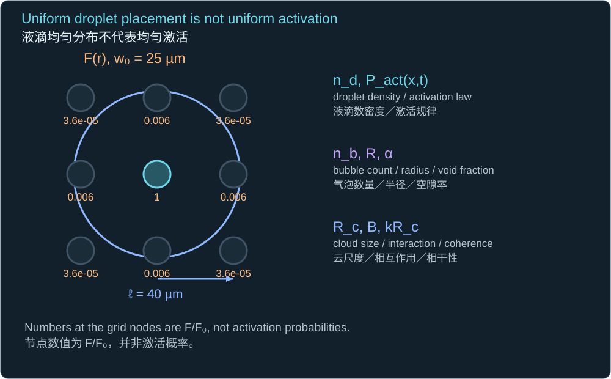
The first line assumes one bubble per activated droplet, before coalescence, fragmentation or dissolution. The second assumes equal current radii; otherwise sum individual volumes or integrate a size distribution.
第一行假设每个激活液滴形成一个气泡，且尚未并合、破碎或溶解。第二行假设当前半径相同；否则须对各泡体积求和或对尺寸分布积分。
For 8 µm bubbles at 40 µm cubic pitch, α = 0.03351, or 3.351%. A 27-cell volume has an equivalent spherical cloud radius 74.44 µm. The classical interaction screen below is about 2.90, so a low void fraction does not ensure weak collective effects. This parameter comes from monodisperse linear cloud theory; it is a screen, not a laser-collapse pressure formula.
若 8 µm 气泡按 40 µm 的立方节距排列，则 α = 0.03351，即 3.351%。27 个单元的体积对应等效球形云半径 74.44 µm。下述经典相互作用筛查量约为 2.90，因此较低空隙率不保证群体效应较弱。该量来自单分散线性气泡云理论，仅用于筛查，不是激光塌缩压力公式。
B = α(Rc/R)²
F(r)/F0 = exp(−2r²/w0²)
Rc locates the cloud size; the Gaussian beam determines where activation inputs differ even on a uniform grid.
Rc 表示气泡云尺度；即使网格均匀，高斯光束也会使激活输入随位置变化。
At the inherited w₀ = 25 µm, a grid node 40 µm off axis receives only 0.005976 of central fluence; a (40,40) µm corner receives 0.00003571. Uniform PFC concentration under this beam therefore does not supply uniform bubble size or timing. A uniform-array calculation requires a different illumination or an explicitly imposed source distribution. The illustrative inventory concentration from the original focal volume would yield about 21.85% ideal vapor volume if all equivalents vaporized without constraints—already a dense, interacting state.
沿用 w₀ = 25 µm 时，离轴 40 µm 的节点仅获得中心能量面密度的 0.005976；(40,40) µm 角点仅为 0.00003571。因此，该光束下均匀的 PFC 浓度不能给出均匀的气泡尺寸或时序。均匀阵列计算需要改变照明方式，或明确规定源分布。原焦域体积的示例存量浓度若所有当量均无约束汽化，理想蒸气体积将占约 21.85%，已属于密集的相互作用状态。
Maeda & Colonius (2019), JFM, DOI 10.1017/jfm.2018.968 — cloud interaction parameter, Section 3; nonlinear cloud anisotropy.
10 · Solve a finite uniform cloud in the acoustic limit
10 · 在声学极限下求解有限均匀气泡云
p̂(r,ω) = −[ρω²NbV̂/(4πr)]eikrF(kRc)
F(z) = 3[sin z − z cos z]/z³
k = ω/c
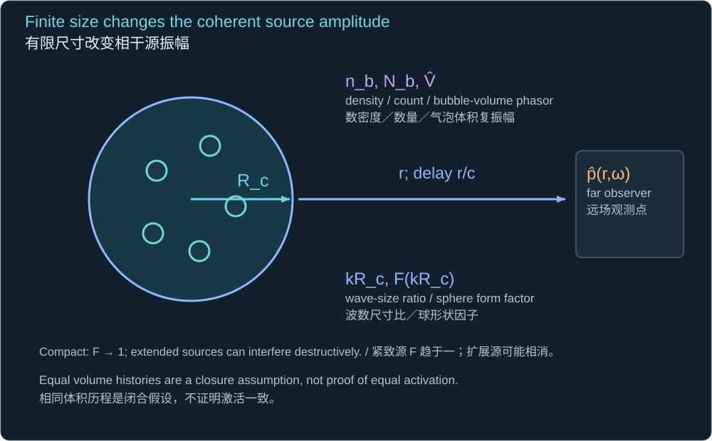
A uniform spherical cloud of equal volume phasors has a finite-size form factor; the observer is outside the cloud in an unbounded acoustic carrier.
相同体积复振幅组成的均匀球形气泡云具有有限尺寸形状因子；观测点位于无限声学载液中的气泡云外部。
This follows by integrating the retarded Green function over a sphere; angular integration and the radial integral produce the factor F. In the compact limit F tends to one. Finite cloud size introduces cancellation instead of unlimited coherent multiplication. It is a solved radiation problem for prescribed identical sources, not a solved source-generation problem. Strong interaction requires self-consistent bubble susceptibility and pressure.
该式由对球体积分延迟 Green 函数得到；角向及径向积分产生因子 F。紧致极限下 F 趋于一，有限云尺寸引入相消，而不是无限的相干倍增。它求解的是规定相同源的辐射问题，不是源生成问题。强相互作用需要气泡响应率与压力自洽求解。
∇²p′ − (1/cl²)∂²p′/∂t² = −ρ ∂²α′/∂t²
α̂′ = nbχV(ω)p̂′ + α̂drive
keff² = ω²/cl² − ρnbω²χV(ω)
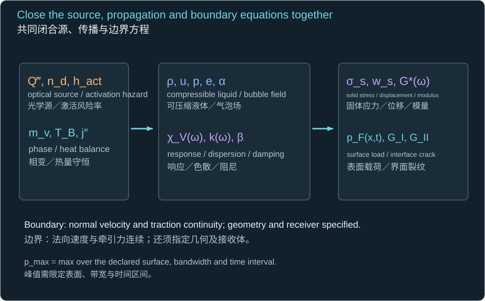
χV is the complex volume response to pressure and αdrive represents directly activated/forced volume change. Their heat, mass and shell physics close the uniform-medium wave equation.
χV 为对压力的复体积响应率；αdrive 表示直接激活／驱动的体积变化。热、质传递及壳层物理共同闭合均匀介质波动方程。
χV(ω) = −4πRe/{ρ[ω0² − ω² − 2iβω]}
ω0² = [3κpg,e − 2σ/Re]/(ρRe²)
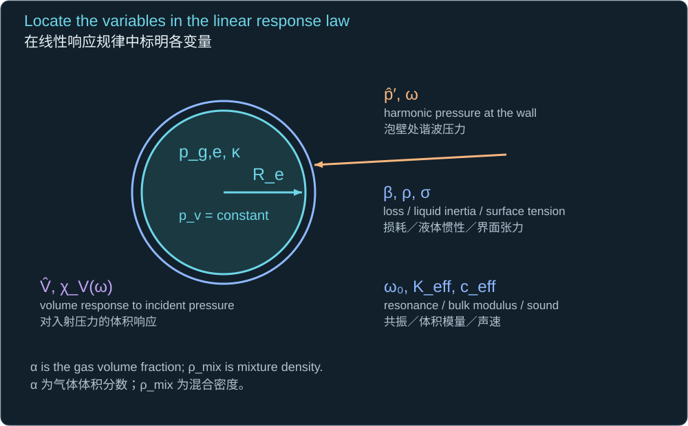
This illustrative susceptibility is for small oscillations of a fixed-mass gas around equilibrium Re with constant vapor pressure. β denotes damping. It must be replaced for phase-changing PFC bubbles.
此示例响应率适用于固定质量气体在平衡半径 Re 附近的小振荡，假设蒸气压恒定；β 表示阻尼。相变 PFC 气泡需替换该响应率。
Once the susceptibility, activation source, boundaries and geometry are specified, this is a closed linear pressure problem that can be solved in frequency or time. It contains resonance, attenuation and wave interference. It applies to the acoustic perturbation regime after bubbles exist; it does not describe their nonlinear nucleation or violent collapse. A nanodroplet-rich liquid before activation must not be assigned the gas-mixture compressibility after activation.
给定响应率、激活源、边界及几何后，这是可在频域或时域求解的闭合线性压力问题，包含共振、衰减及波干涉。它适用于气泡已经存在后的声学扰动状态，不描述非线性成核或猛烈塌缩。激活前富含纳米液滴的液体，不能被赋予激活后含气混合介质的可压缩性。
1/Keff = (1 − α)/Kl + α/(κpg,e)
ceff = √(Keff/ρmix)
The Wood-type estimate treats gas compressibility alone, omitting the curvature correction to incremental bubble stiffness. It is a low-frequency screen, not the constant sound speed of a collapsing PFC cloud.
Wood 型估计仅采用气体可压缩性，忽略气泡增量刚度中的曲率修正。它是低频筛查，并非塌缩 PFC 气泡云的恒定声速。
For the 3.351% void example, κ = 1.4 and equilibrium gas pressure including curvature at 8 µm give about 71.2 m/s under this deliberately simplified limit. Its large difference from 1482 m/s shows why pure-water travel time cannot automatically be used through a bubbly layer. Rapid phase change, frequency-dependent bubble response and a gel scaffold require a different susceptibility.
对于 3.351% 空隙率示例，取 κ = 1.4，且 8 µm 平衡气压包含曲率项，则在这个刻意简化的极限下约为 71.2 m/s。它与 1482 m/s 的巨大差异说明，穿过含泡层时不能自动采用纯水传播时间。快速相变、随频率变化的气泡响应及凝胶骨架要求不同的响应率。
Worked spatial solution with pressure feedback
包含压力反馈的空间解
Consider a finite spherical cloud with a uniform small harmonic drive and uniform bubble susceptibility. Use the time convention exp(−iωt), the same carrier density inside and outside, regularity at the centre, and an outgoing wave outside. Pressure and normal velocity are continuous at Rc. This solves the spatial pressure problem once the PFC susceptibility and drive are supplied; it does not estimate those formulation-specific functions.
考虑具有均匀小幅谐波驱动及均匀气泡响应率的有限球形气泡云。采用时间约定 exp(−iωt)，内外载液密度相同，中心正则、外部波向外传播，并在 Rc 处保持压力及法向速度连续。给定 PFC 响应率及驱动后，此解完成空间压力问题，但不会估计这些依赖配方的函数。
ki² = ω²/cl² − ρnbω²χV
kl = ω/cl
p0 = ρω²α̂drive/ki²
j0(z) = sin z/z
q = ikl − 1/Rc
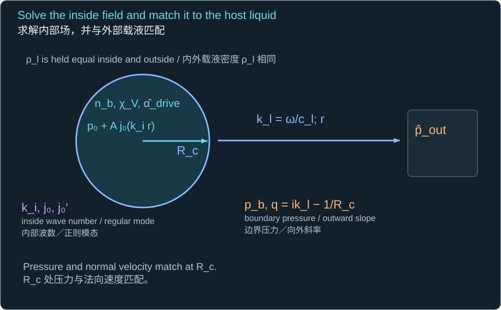
The uniform source gives the particular solution p0. j0 is regular at the centre; q is the logarithmic derivative of the exterior outgoing wave at the boundary. Use limits at zero arguments.
均匀源给出特解 p0；j0 在中心正则；q 为边界处外部出射波的对数导数。零参数处须采用极限。
A = qp0/[kij′0(kiRc) − qj0(kiRc)]
p̂in(r) = p0 + Aj0(kir)
pb = p0kij′0(kiRc)/[kij′0(kiRc) − qj0(kiRc)]
p̂out(r) = pb(Rc/r)eik_l(r−R_c)
Substitution verifies the interior Helmholtz equation, centre regularity, outgoing radiation and both boundary matches. j0 prime is a derivative with respect to its argument, not time.
代入可验证内部 Helmholtz 方程、中心正则、出射辐射及两个边界匹配。j0 的撇号表示对其参数求导，并非时间导数。
The executable example uses hypothetical equilibrium 8 µm fixed-gas bubbles, αdrive = 10⁻⁷ and β = 0.1ω₀. It checks the pressure/velocity match to 2.2 × 10⁻¹³ relative error and recovers the independently integrated no-feedback Green-function field to 2.4 × 10⁻¹⁵. Maximum fractional radius perturbation stays below 7.4 × 10⁻⁶, within its small-amplitude assumption. The frequency sweep is a conditional response, not a laser-collapse peak or a calibration of PFC.
可执行示例采用假想的平衡 8 µm 固定气体气泡、αdrive = 10⁻⁷ 及 β = 0.1ω₀。压力／速度匹配的相对误差为 2.2 × 10⁻¹³；在无反馈情况下，独立积分的 Green 函数场重现误差为 2.4 × 10⁻¹⁵。最大半径相对扰动低于 7.4 × 10⁻⁶，符合小幅假设。频率扫描为有条件的响应，并非激光塌缩峰值或 PFC 标定。
Finite-cloud solution and independent verification · Frequency-response data.
11 · The rigorous nonlinear PFC pressure problem
11 · 严格的非线性 PFC 压力问题
For strong collapse, the final tier resolves compressible liquid and bubble/gas domains, their moving interfaces, phase exchange and the actual solid stack. In each fluid bulk domain the equations below are conservation laws; interfacial mass, momentum and heat jump conditions join them. Species and EOS identify water, PFC vapor and permanent gas. A subgrid Eulerian–Lagrangian model is appropriate only while its bubbles remain separated and its stress/thermal closures have been verified.
对于强塌缩，最终模型层级需解析可压缩液体及气泡／气体区域、运动界面、相态交换和实际固体层。在每个流体区域，下述方程为守恒规律，并通过界面的质量、动量及热量跳跃条件连接。物种和状态方程区分水、PFC 蒸气及永久气体。只有气泡保持分离且应力／热闭合关系已核验时，才适合采用亚网格 Euler–Lagrange 模型。
∂ρ/∂t + ∇·(ρu) = 0
∂(ρu)/∂t + ∇·(ρu⊗u) = −∇p + ∇·τ
∂(ρetot)/∂t + ∇·[(ρetot + p)u]
= ∇·(τu) − ∇·q + Q‴
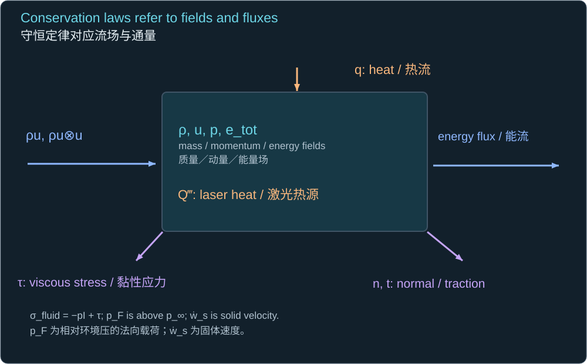
ρ, u, p and total specific energy are bulk fluid fields. Viscous stress, heat flux and laser source must be consistent with the phase/species EOS.
ρ、u、p 及单位质量总能为体相流体场；黏性应力、热通量及激光源须与相态／物种状态方程一致。
ufluid·n = ẇsolid·n
tfluid = tsolid
σfluid = −pI + τ
pF = −n·σfluidn − p∞
Pmax,film = maxx∈A, t∈[t0,t1] pF(x,t)
wsolid is solid displacement; its dot is solid velocity. Tractions use the same chosen normal. Here pF is the compressive normal load above ambient, including viscous normal stress. A reported peak must specify area, time interval and measurement bandwidth.
wsolid 为固体位移，其上点表示固体速度。两侧牵引力采用同一个指定法向。此处 pF 为相对于环境压力的压缩法向载荷，包含黏性法向应力。报告峰值须指定区域、时间区间及测量带宽。
A target-specific maximum additionally needs a fixed admissible pulse-energy range and a failure rule: usable pressure may be limited by membrane rupture, gel fracture, droplet depletion, film damage or receiver rejection before the largest fluid pressure is reached. The current project does not identify the core/shell/absorber, activation law, bubble history, gel dynamic constitutive law, or stack/interface properties sufficiently to assign a unique numerical PFC-array peak. The theory above specifies a solvable conditional model and rejects the unsupported substitution of a water-bubble record for that number.
目标体系的最大值还需要固定允许的脉冲能量范围及失效规则：达到最高液体压力之前，膜破裂、凝胶断裂、液滴耗尽、薄膜损伤或接收失败就可能限制可用压力。当前项目尚未充分确定液核、壳层、吸收体、激活规律、气泡历程、凝胶动态本构及层间／界面性质，因而不能给出唯一的 PFC 阵列峰值数值。上述理论给出了可求解的有条件模型，也排除了用水气泡纪录替代该数值的不受支持做法。
Technical appendix · Derivation and verification ledger
技术附录 · 推导与核验记录
T = 2πρΣRi³Ṙi²
+ 4πρΣi<jRi²Rj²ṘiṘj/dij
Π = (4πΔp/3)ΣRi³
These are the kinetic and pressure-potential energies of the ideal fixed-centre monopole model. The cross kinetic terms derive the neighbour inertia.
这些是理想固定质心单极模型的动能和压力势能；动能交叉项给出邻泡惯性。
Apply the Lagrange equation to T − Π. Differentiation of each cross term cancels the product containing the local velocity and leaves the neighbour acceleration/velocity terms in Section 7. For an equal-radius symmetric mode, energy conservation immediately gives the integrated speed and the collapse integral. Independently, direct ODE integration conserves this energy; the same numerical convergence does not validate omitted compressibility, phase change or shape dynamics.
对 T − Π 应用 Lagrange 方程。每个交叉项求导后，含本地速度的乘积相消，剩下第七节中的邻泡加速度／速度项。对于等半径对称模态，能量守恒直接给出积分速度及塌缩积分。独立的直接 ODE 积分也守恒此能量；相同的数值收敛并不验证被忽略的可压缩性、相变或形状动力学。
0.914681 = [√(3/2)/3] B(5/6, 1/2)
The beta-function evaluation independently checks the quadrature of the empty-cavity collapse integral. B here is the beta function, not the cloud interaction parameter.
Beta 函数求值独立核对空腔塌缩积分的数值积分；此处 B 是 Beta 函数，并非气泡云相互作用参数。
The quadrature and beta coefficient agree to about 1.3 × 10⁻¹¹ relative error. The largest ideal-cluster energy residual is 2.2 × 10⁻¹¹; tightening solver tolerances/step sizes changes cutoff time by less than 2 × 10⁻¹⁰ relative and the sampled pre-cutoff pressure maximum by about 0.0131% at worst. The files contain the complete values and stopping rules. These are numerical verification statements. Physical validation requires synchronized target measurements and held-out cases.
数值积分与 Beta 系数的相对误差约为 1.3 × 10⁻¹¹。理想气泡群的最大能量残差为 2.2 × 10⁻¹¹；收紧求解容差及步长后，截止时刻的相对变化小于 2 × 10⁻¹⁰，采样的截止前压力最大值最坏变化约 0.0131%。文件包含完整数值及停止规则。这些结论属于数值核验，物理验证仍需同步的目标测量及独立验证算例。
Calculation source · Inherited and derived values · 1/3/4/5/27-bubble summary · Verification results · Source provenance.
计算源代码 · 沿用及推导数值 · 1／3／4／5／27 泡结果 · 核验结果 · 来源记录。
Integrated problem · One pulse, one droplet, five bubbles, then a cloud
综合计算题 · 一个脉冲、一颗液滴、五个气泡，再到气泡云
Use the inherited values listed in Sections 3 and 5; efficiencies, gas closures and array geometry are explicitly hypothetical. Each observation time and speed has its own label.
采用第三、五节列出的沿用数值；效率、气体闭合及阵列几何均明确为假设。各观测时刻与速度分别标注。
1. Recompute Ep and Eabs from w₀ = 25 µm, F₀ = 0.10 J/cm² and ηabs = 0.30. At a declared 1% bubble-work allocation, calculate the PV-only radius ceiling. Is that an activation or radius prediction?
1. 采用 w₀ = 25 µm、F₀ = 0.10 J/cm² 和 ηabs = 0.30，重算 Ep 及 Eabs。若声明 1% 分配给气泡功，计算仅考虑压差功的半径上界。它是否预测激活或半径？
Reference answer / 参考答案
Ep = πw0²F0/2
Eabs = ηabsEp
Rceiling = [3ηbEabs/(4πΔp)]1/3Convert fluence to SI before integrating; the declared ηb supplies only pressure-volume work.
积分前将能量面密度转换为 SI 单位；所给 ηb 只供给压差体积功。
0.10 J/cm² = 1000 J/m². Ep = 0.981748 µJ; Eabs = 0.294524 µJ. With Δp = 98986 Pa and ηb = 0.01, the ceiling is 19.223 µm. It omits surface, gel, latent and dissipative costs and does not identify activation or a physical trajectory.
0.10 J/cm² = 1000 J/m²。Ep = 0.981748 µJ；Eabs = 0.294524 µJ。采用 Δp = 98986 Pa、ηb = 0.01，上界为 19.223 µm。它忽略了界面、凝胶、潜热及耗散成本，不能确定激活或真实历程。
2. For the illustrative 250 nm PFH droplet, calculate its ideal vapor radius at 1 atm, the number of droplet equivalents for one 8 µm bubble, and the phase-energy demand for five and 27 such effective bubbles.
2. 对示例 250 nm PFH 液滴，计算其在 1 atm 的理想蒸气半径、一个 8 µm 气泡所需的液滴当量，以及五个与 27 个这种有效气泡的相变能量需求。
Reference answer / 参考答案
md = ρPFC4πa³/3
Rv,d = [3mdRuTb/(4πMp)]1/3
Neq = (Rmax/Rv,d)³
Ephase,total = NbNeqmd[cp(Tb − T0) + Lv]Nb counts effective 8 µm bubbles; Neq counts nanodroplet mass equivalents per effective bubble.
Nb 计数有效 8 µm 气泡；Neq 计数每个有效泡所需的纳米液滴质量当量。
Per droplet: mass 1.0930 × 10⁻¹⁶ kg, ideal vapor radius 1.28143 µm, phase energy 13.2173 pJ. Neq = 243.325. One effective bubble needs 3.21610 nJ; five need 16.0805 nJ (5.460% of Eabs), and 27 need 86.8347 nJ (29.483%). These continuous equivalents and energy ledgers do not establish that enough droplets activate together or coalesce.
每个液滴：质量 1.0930 × 10⁻¹⁶ kg，理想蒸气半径 1.28143 µm，相变能量 13.2173 pJ。Neq = 243.325。一个有效泡需要 3.21610 nJ；五个需要 16.0805 nJ，占 Eabs 的 5.460%；27 个需要 86.8347 nJ，占 29.483%。这些连续当量及能量核算不能证明足够多液滴会同步激活或汇合。
3. Calculate ideal tR and wall speed at R = Rmax/2 and Rmax/10. For the latter speed, calculate Mach number using c = 1482 m/s. Could it be reported as a jet speed?
3. 计算理想 tR，以及 R = Rmax/2 和 Rmax/10 时的泡壁速度。采用 c = 1482 m/s，计算后一速度的马赫数。能否将它报告为射流速度？
Reference answer / 参考答案
tR = 0.914681Rmax√(ρ/Δp)
Ṙ = −√{[2Δp/(3ρ)][(Rmax/R)³ − 1]}
Mw = |Ṙ|/cBoth snapshots use the same ideal 8 µm cavity, but different current radii.
两次瞬时状态属于同一个理想 8 µm 空腔，但当前半径不同。
tR = 0.73482 µs. At half radius, Ṙ = −21.512 m/s; at one tenth, −256.989 m/s and Mw = 0.17341. The latter is beyond the declared 0.1 incompressible-screen cutoff. It is a radial wall velocity, not a directed jet-tip velocity.
tR = 0.73482 µs。半径减半时 Ṙ = −21.512 m/s；减至十分之一时为 −256.989 m/s，Mw = 0.17341。后者超出所声明的不可压缩筛查马赫数 0.1 截止值。它是径向泡壁速度，不是有方向的射流尖端速度。
4. Allocate 1% of Eabs to a 50 ns rectangular outgoing weak acoustic pulse and observe at 1 mm. Calculate the pressure scale. If duration falls by a factor of four at fixed acoustic energy and radius, what changes?
4. 将 Eabs 的 1% 分配给宽度为 50 ns、向外传播的弱矩形声脉冲，并在 1 mm 处观测。计算压力尺度。若声能和测距不变，持续时间缩短至四分之一，会怎样？
Reference answer / 参考答案
Esh = ηshEabs
prect = √[Eshρc/(4πr²τsh)]The observer distance and pulse width are part of the conditional pressure definition.
观测距离及脉冲宽度属于有条件压力定义的一部分。
Esh = 2.94524 nJ. Substitution of 998.2 kg/m³, 1482 m/s, 10⁻³ m and 50 × 10⁻⁹ s gives 83.273 kPa. A fourfold shorter rectangle gives 166.546 kPa. This shape-dependent scaling does not prove a realizable compression pulse and is not a nonlinear shock-pressure law.
Esh = 2.94524 nJ。代入 998.2 kg/m³、1482 m/s、10⁻³ m 及 50 × 10⁻⁹ s，得 83.273 kPa。矩形持续时间缩短至四分之一时，得到 166.546 kPa。这种依赖波形的尺度关系不能证明该压缩脉冲可实现，也不是非线性冲击压力规律。
5. Three synchronous empty cavities form an equilateral triangle of side 40 µm; each starts at Rmax = 8 µm. Calculate χ and compare the formal collapse time with the isolated bubble. Can 0.915 still be retained?
5. 三个同步空腔形成边长 40 µm 的等边三角形，每个从 Rmax = 8 µm 开始。计算 χ，并比较形式塌缩时间与孤立泡。还能保留 0.915 吗？
Reference answer / 参考答案
χ = RmaxΣj≠i1/dij
tc,formal = C(χ)Rmax√(ρ/Δp)Each triangle bubble has two equally distant neighbours; the coefficient is the integrated coupled coefficient in Section 7.
每个三角形气泡都有两个等距邻泡；系数采用第七节中积分得到的耦合系数。
χ = 8(1/40 + 1/40) = 0.4. Numerical quadrature gives C = 1.052451, hence formal tc = 0.84550 µs, versus 0.73482 µs isolated: about 15.06% longer. The 0.914681 coefficient belongs to the isolated ideal equation; mutual inertia changes the equation and its integral. Neither formal endpoint resolves the real fast collapse.
χ = 8(1/40 + 1/40) = 0.4。数值积分得 C = 1.052451，故形式 tc = 0.84550 µs，而孤立泡为 0.73482 µs，约增加 15.06%。0.914681 系数属于孤立的理想方程；相互惯性改变了方程及积分。两种形式终点都未解析真实高速塌缩。
6. For one 8 µm bubble per 40 µm cubic cell, calculate number density, void fraction and B using Rc = 74.44 µm. Calculate the Gaussian fluence ratio at (40,40) µm for w₀ = 25 µm. Could the inherited pulse create a uniform 27-bubble array by assumption alone?
6. 若每个 40 µm 立方单元内含一个 8 µm 气泡，计算数密度、空隙率及 B，取 Rc = 74.44 µm。采用 w₀ = 25 µm，计算 (40,40) µm 处高斯能量面密度比例。能否仅靠假设就令沿用脉冲产生均匀的 27 泡阵列？
Reference answer / 参考答案
nb = 1/ℓ³
α = nb4πR³/3
B = α(Rc/R)²
F(r)/F0 = exp(−2r²/w0²)The grid node radius is the distance from the laser axis, not the bubble radius.
网格节点的径向位置为其距激光轴的距离，不是气泡半径。
nb = 1.5625 × 10¹³ m⁻³; α = 0.0335103; B ≈ 2.90. At the corner, r² = 40² + 40² µm², giving F/F₀ = 3.5713 × 10⁻⁵. No: uniform initial count does not give uniform dose, activation timing or radius. Even imposed equal initial radii evolve differently at cloud edges and the centre.
nb = 1.5625 × 10¹³ m⁻³；α = 0.0335103；B ≈ 2.90。角点 r² = 40² + 40² µm²，故 F/F₀ = 3.5713 × 10⁻⁵。不能：均匀初始数量不会给出均匀剂量、激活时序或半径。即使规定初始半径相同，气泡云边缘与中心的演化仍会不同。
7. A measured average jet speed is 1400 m/s. Calculate dynamic pressure and linear rigid-stop water hammer using the inherited carrier. State why neither proves a project film-load maximum, then name the data needed to close the PFC array theory.
7. 实测平均射流速度为 1400 m/s。采用沿用载液，计算动压和线性刚性停止水锤。说明两者为何不能证明项目薄膜载荷最大值，再指出闭合 PFC 阵列理论所需数据。
Reference answer / 参考答案
qj = ρUj²/2
pwh ≈ ρcUj
Mj = Uj/cThese pressure expressions represent distinct steady-flow and transient-impact approximations.
这些压力表达式分别表示稳态流动与瞬态冲击近似。
qj = 978.236 MPa; linear pwh = 2071.065 MPa; Mj = 0.94467. At this Mach number the linear water-hammer value is only arithmetic, not a reliable impact prediction. Target geometry, impedances, transient pulse shape and a separate collapse shock matter. Close the theory with core/shell/absorber identity, measured local dose and activation statistics, active droplet count/spacing, phase exchange/EOS, synchronized bubble histories, and calibrated liquid/gel/stack boundary response.
qj = 978.236 MPa；线性 pwh = 2071.065 MPa；Mj = 0.94467。在此马赫数下，线性水锤值只是算术结果，不是可靠的冲击预测。目标几何、阻抗、瞬态波形及独立塌缩冲击波都很重要。理论闭合需要液核／壳层／吸收体身份、实测局部剂量与激活统计、活性液滴数量／间距、相态交换及状态方程、同步气泡历程，以及标定的液体／凝胶／层状边界响应。
Brief synthesis: In three sentences, explain why the ideal singularity, a measured 1400 m/s average jet, and a prescribed uniform array do not supply one universal PFC-film pressure maximum. Identify the first measurement that would make this project’s conditional pressure model predictive.
简短综合检查：用三句话说明：理想奇点、实测 1400 m/s 平均射流和规定的均匀阵列为何不能给出一个普适 PFC 薄膜压力最大值。指出首先需要哪项测量，才能使本项目的有条件压力模型具有预测能力。
Reference answer / 参考答案
The ideal singularity omits the mechanisms that stop collapse, and a measured jet average neither resolves its brief peak nor the pressure transmitted into a specific film. Uniform droplet placement does not establish equal activation and source histories; interaction, delays, shielding and the fixed pulse budget must be solved together. First identify the target formulation and calibrated local activation/bubble histories, then synchronize a calibrated pressure or film-response measurement to validate the source-to-boundary prediction.
理想奇点忽略了终止塌缩的机制；实测射流平均值既未解析短时峰值，也未确定传入具体薄膜的压力。均匀液滴位置不能确定相同激活及源历程；相互作用、延迟、屏蔽和固定脉冲预算须共同求解。应首先确定目标配方并标定局部激活／气泡历程，再同步记录标定的压力或薄膜响应，以验证源至边界的预测。